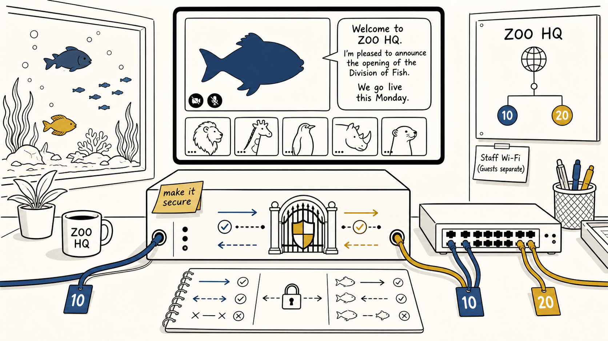

FISH-S1E01
Welcome to ZOO HQ

Illustration not yet generated
images/fish-s1e01-welcome-to-zoo-hq.png
See
images/prompts.txt for the AI prompt.Story event
Fysh announces the Division of Fish will open on Monday. The network is a sealed FortiGate, one switch and a note saying 'make it secure.'
Study-guide scope
FortiGate purpose, starting topology and first-packet decisions
Learning outcomes
- ✓Explain the FortiGate role
- ✓Trace a simple client-to-internet flow
- ✓Separate path, permission, state and inspection
Mental model
The FortiGate is a controlled doorway: find the path, check permission, preserve state and inspect.
Topology change
Canon begins with FGT-ZOO-EDGE-01, SW-ZOO-01, Staff VLAN 10 and Server VLAN 20.
Optional lab
LAB-FISH-01 — Starting topology